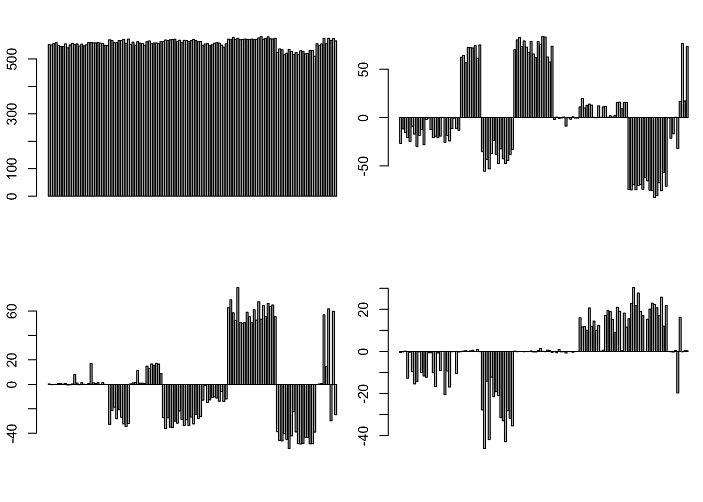
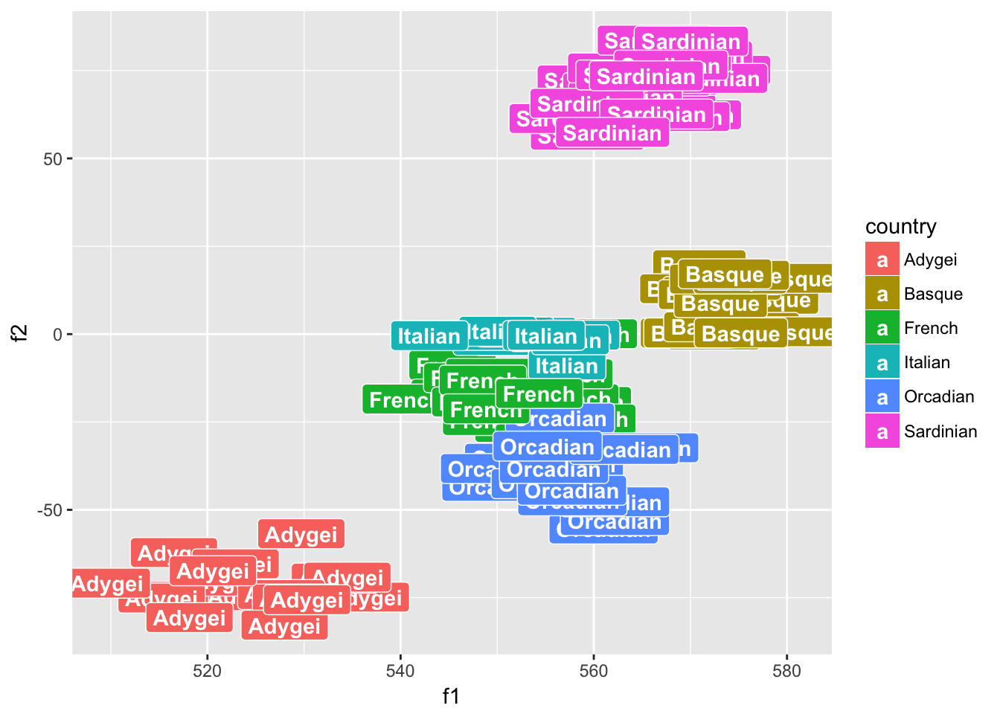
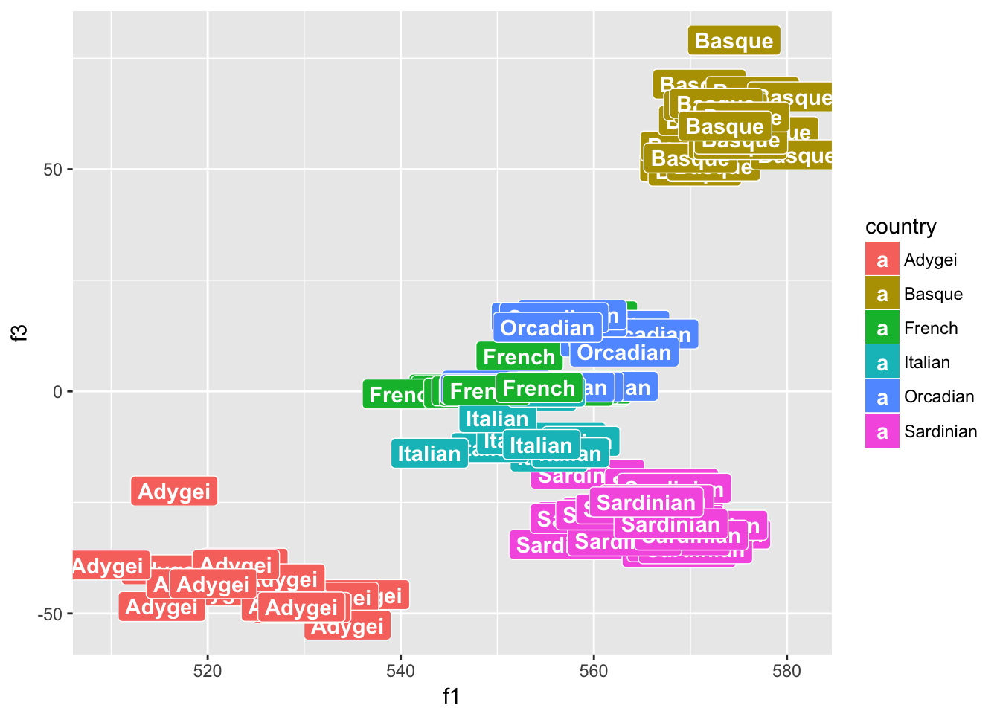
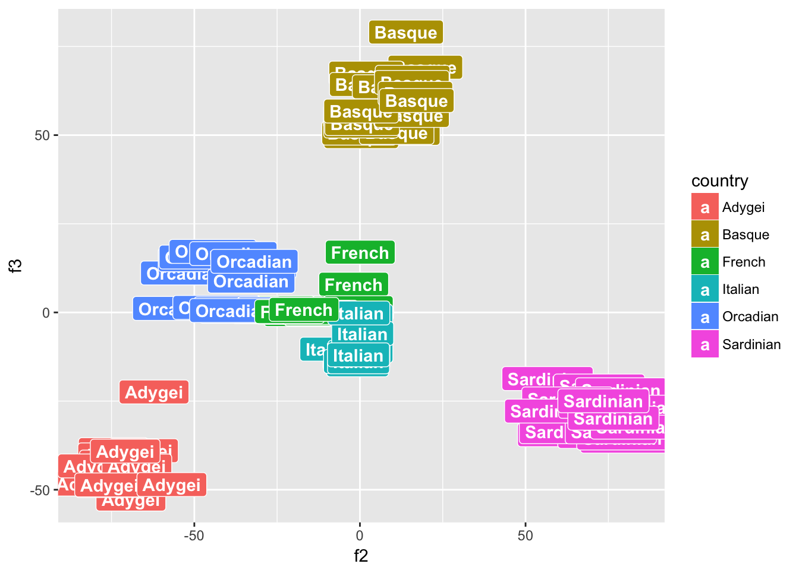
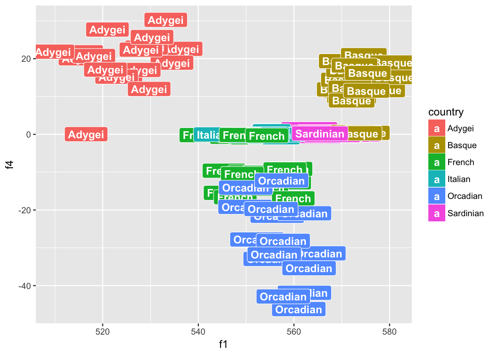
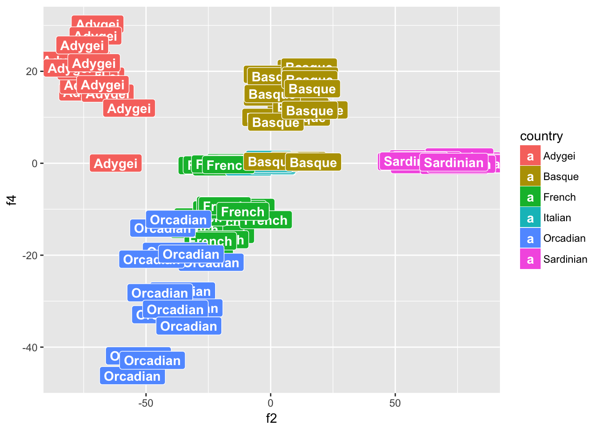
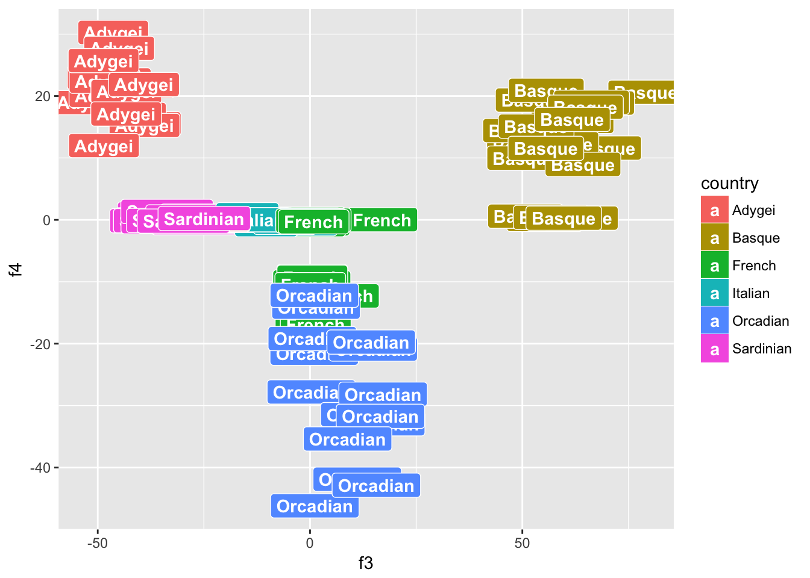

Last updated: 2017-02-21
Code version: e074526
Binflash = readRDS("~/HG/LogisticFlash_workflow/data/popgen/H398_K10.rds")
id_index = readRDS("~/HG/LogisticFlash_workflow/data/popgen/H938_colnames.rds")
id_index = sub(".*_", "", id_index)
id_index = data.frame(id_index)
library(ggplot2)
plot_df = data.frame(Binflash$f)
colnames(plot_df) = c("f1","f2","f3","f4")par(mfrow = c(2,2),mar = c(5,4,4,2) - 1.8)
for(i in 1:4) barplot(Binflash$f[,i])
data_label = read.table("~/HG/LogisticFlash_workflow/data/popgen/Euro.clst.txt",as.is = TRUE)
colnames(data_label) = c("n","id_index","country")
country = sapply(id_index$id_index,function(x){data_label$country[which(data_label$id_index == x)]})p1 <- ggplot(plot_df, aes(f1, f2, label = (as.character(country) )), parse = FALSE)
# p + geom_text()
p1 + geom_label(aes(fill = country), colour = "white", fontface = "bold")
p2 <- ggplot(plot_df, aes(f1, f3, label = (as.character(country) )), parse = FALSE)
# p + geom_text()
p2 + geom_label(aes(fill = country), colour = "white", fontface = "bold")
p3 <- ggplot(plot_df, aes(f2, f3, label = (as.character(country) )), parse = FALSE)
# p + geom_text()
p3 + geom_label(aes(fill = country), colour = "white", fontface = "bold")
p3 <- ggplot(plot_df, aes(f1, f4, label = (as.character(country) )), parse = FALSE)
# p + geom_text()
p3 + geom_label(aes(fill = country), colour = "white", fontface = "bold")
p3 <- ggplot(plot_df, aes(f2, f4, label = (as.character(country) )), parse = FALSE)
# p + geom_text()
p3 + geom_label(aes(fill = country), colour = "white", fontface = "bold")
p3 <- ggplot(plot_df, aes(f3, f4, label = (as.character(country) )), parse = FALSE)
# p + geom_text()
p3 + geom_label(aes(fill = country), colour = "white", fontface = "bold")
sessionInfo()R version 3.3.0 (2016-05-03)
Platform: x86_64-apple-darwin13.4.0 (64-bit)
Running under: OS X 10.12.3 (unknown)
locale:
[1] en_US.UTF-8/en_US.UTF-8/en_US.UTF-8/C/en_US.UTF-8/en_US.UTF-8
attached base packages:
[1] stats graphics grDevices utils datasets methods base
other attached packages:
[1] ggplot2_2.2.1 MASS_7.3-45 workflowr_0.3.0 rmarkdown_1.3
loaded via a namespace (and not attached):
[1] Rcpp_0.12.9 rstudioapi_0.6 knitr_1.15.1
[4] magrittr_1.5 munsell_0.4.3 doParallel_1.0.10
[7] pscl_1.4.9 colorspace_1.3-2 SQUAREM_2016.8-2
[10] lattice_0.20-34 foreach_1.4.3 plyr_1.8.4
[13] ashr_2.1.4 stringr_1.1.0 flashr_0.1.1
[16] tools_3.3.0 parallel_3.3.0 grid_3.3.0
[19] gtable_0.2.0 git2r_0.18.0 htmltools_0.3.5
[22] iterators_1.0.8 assertthat_0.1 lazyeval_0.2.0
[25] yaml_2.1.14 rprojroot_1.2 digest_0.6.12
[28] tibble_1.2 codetools_0.2-15 evaluate_0.10
[31] labeling_0.3 stringi_1.1.2 scales_0.4.1
[34] backports_1.0.5 truncnorm_1.0-7 This R Markdown site was created with workflowr